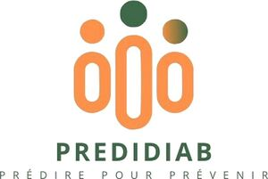

Trade Mark Journal No.2025/028 11 July 2025
WO0000001844034 (5,42)
Office of origin: France
Date of International Registration:17 January 2025
Date of designation in the UK:
5 June 2025

International priority date claimed: 12 December 2024
(France)
(5105166)
- Class 5
- Pharmaceutical and veterinary products sold on prescription or over the counter; sanitary products for medicine; dietetic substances for medical use; chemical preparations for medical or pharmaceutical use; vaccines; food for babies; plasters, material for dressings; disinfectants; vitamins, vitamin-based preparations, dietetic substances for medical use; natural dietetic foods and remedies based on medicinal plants for medical or veterinary use; beverages and foodstuffs for medicinal use; food supplements and additives for medicinal use; mineral food supplements for medicinal use; nutritional supplements, plant-based preparations for medicinal use; food supplements containing proteins, carbohydrates, lipids and/or fibers, or micronutrients such as vitamins and/or minerals, amino acids and/or fatty acids, for medical use; plant-based products and plant extracts for medicinal use; preparations for making dietetic or medicated beverages; medicinal preparations; chemical preparations for medicinal use; substances for medicinal use; medicated candy and confectionery for medicinal use; pharmacological preparations for skin care, medical diagnostic products, chemical products for monitoring the results of diagnostic research, kit for detecting a risk of predisposition to diabetes; chemical preparations for the diagnosis of diabetes; pharmaceutical preparations for the prevention and treatment of diabetes.
- Class 42
- Scientific and technological services, and also assorted development and design; medical and pharmacological research services; development of pharmaceutical products, carrying out evaluations of pharmaceutical products, carrying out testing on pharmaceutical products, laboratory research services concerning pharmaceutical products; computer programming in the medical field; advisory services for professionals and patients in the field of diabetes; management of data for medical use; information and advisory services; providing scientific and pharmaceutical expertise.
PrédiDiab
Representative: Madame PONCHEL Mathilde FIDAL, 4-6 Avenue d'Alsace, F-92982 PARIS LA DEFENSE CEDEX, FRANCE